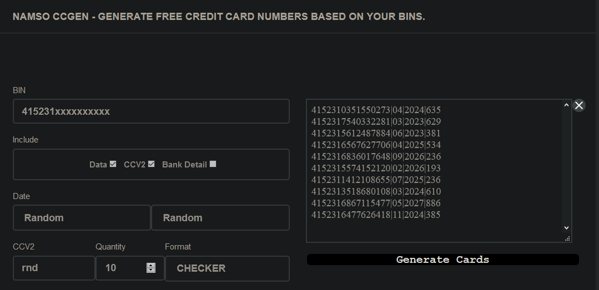

El binear consta de muchas partes y es lo esencial para aprender sobre carding. prácticamente binear es tomar los 6 números de una tarjeta y generar más números de tarjetas que contengan los 16 números, la fecha y el cvv, y con estas tarjetas generados poder sacar suscripciones que es lo más básico.
Para generar los numeros de tarjetas se utiliza una herramienta llamada Namso CCGen, la cual puede ser encontrada en Google o bien descargando la desde la Play Store. Es muy dificil que solo con el BIN se genere la misma numeracion, con fecha y cvv exactos de una tarjeta que sea de una persona, y claro que la tarjeta este funcionando.
El funcionamiento de Namso es bastante sencillo solo tomas un BIN y lo colocas en el generador, Namso utiliza el algoritmo de Luhn para generar los 16 números validos, la fecha y el cvv son completamente aleatorios, aunque esto se puede configurar para colocar una fecha y cvv específicos.
El bineo no afecta directamente a una persona (puede haber casos en los que si, pero es muy raro), el verdadero afectado en el bineo son las empresas que dan algun tipo de servicio, ya sea para escuchar musica o ver peliculas. Y son afectas porque al binear esos servicios y sacar suscripciones con numeros de tarjetas que probablemente ni sean validos (fecha y cvv). Pongamos un ejemplo, un servicio de musica muy bineado y muy conocido es Tidal, este servicio te da la opcion de una prueba gratuita de 30 días, y obviamente al terminar esa prueba te realizaran el cargo a tu tarjeta. Y es ahí donde esta el problema ya que si tu bineaste es casi imposible que ellos puedan realizar el cargo a la tarjeta, aunque existe la posibilidad que es muy minima de que si puedan realizar el cobro y es en ese momento cuando si estas afectando a un persona pues lo datos que fueron introducidos para crear la cuenta eran validos o que la tarjeta estaba LIVE.
Existen diversos tipos de bineo entre ellos estan los siguientes:
Si usted que esta leyendo esto tiene alguna tarjeta de credito o debito, y desea probar algun servicio de musica sin realizar ningun pago, puede ocupar el BIN de su tarjeta. Solo es tomar los primeros 6 numeros de la tarjeta y colocarlos en Namso y generar las tarjetas. Las tarjetas generadas las puede pasar por servicios de musica ya que son los más faciles de binear, porque para uber o compras se necesitan metodos. Pero esto se explicara más a fondo en el apartado de BINS.